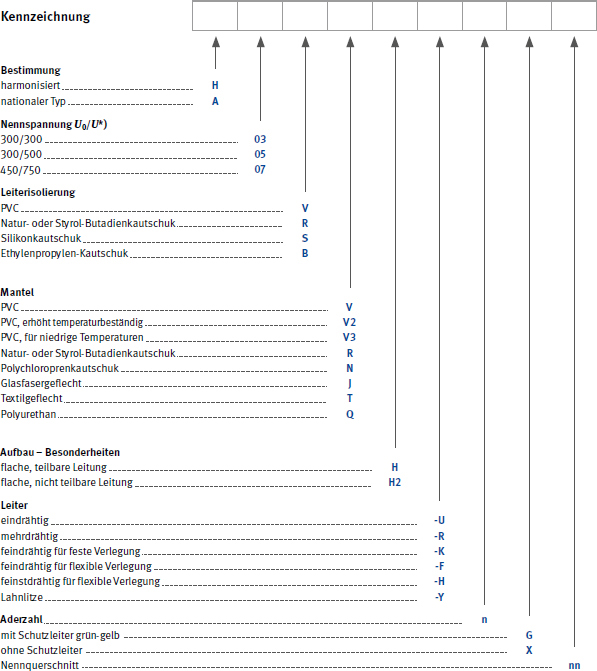

Tabelle 1 Kurzzeichen für harmonisierte Leitungen

| *) | U0 Effektivwert der Spannung zwischen Außenleiter und Erde |
| U Effektivwert der Spannung zwischen Außenleiter und Außenleiter |
Tabelle 2 Beispiele für Leitungsbauarten
| harmonisiert | Leitung | bisher |
| H05V-U H05V-K |
PVC-Verdrahtungsleitung | NYFA NYFAF |
| H07V-U H07V-K |
PVC-Aderleitung | NYA NYAF |
| H03VV-F H03VVH2-F |
Leichte Kunststoffschlauchleitung | NYLHY |
| H05VV-F | mittlere Kunststoffschlauchleitung | NYMHY |
| H05RR-F | mittlere Gummischlauchleitung | NLH |
| H05RN-F | mittlere Gummischlauchleitung | NMH |
| H07RN-F | schwere Gummischlauchleitung | NMHöu |
| H07BQ-F | EPR-isolierte Schlauchleitung mit Polyurethan-Mantel | NGM11YÖ |
| H03VH-Y | leichte Zwillingsleitung | NLYZ |
| H03VH-H | Zwillingsleitung | NYZ |
| H03RT-F | Gummiaderschnur | NSA |
| nationale Norm | Leitung | |
| NSSHÖU | schwere Gummischlauchleitung für sehr hohe mechanische Beanspruchung und für ständige Verwendung im Freien |
Tabelle 3 Kabel und Leitungen ohne grün-gelbe Ader
| Anzahl der Adern | Farben der Adern a) | ||||
| 2 | Blau | Braun | |||
| 3 | – | Braun | Schwarz | Grau | |
| 3 b) | Blau | Braun | Schwarz | ||
| 4 | Blau | Braun | Schwarz | Grau | |
| 5 | Blau | Braun | Schwarz | Grau | Schwarz |
Tabelle 4 Kabel und Leitungen mit grün-gelber Ader
| Anzahl der Adern | Farben der Adern a) | ||||
| Schutzleiter | Aktive Leiter | ||||
| 3 | Grün-Gelb | Blau | Braun | ||
| 4 | Grün-Gelb | – | Braun | Schwarz | Grau |
| 5 | Grün-Gelb | Blau | Braun | Schwarz | Grau |
| a) | Blanke konzentrische Leiter wie metallene Mäntel, Armierungen und Schirme werden in dieser Tabelle nicht als Leiter betrachtet. Ein konzentrischer Leiter ist durch seine Anordnung gekennzeichnet und braucht nicht durch Farben gekennzeichnet zu werden. |
| b) | Nur für bestimmte Anwendungen |